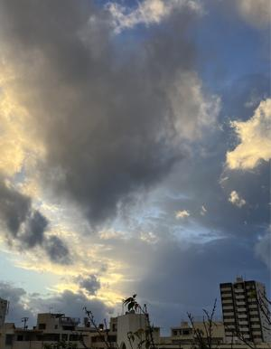
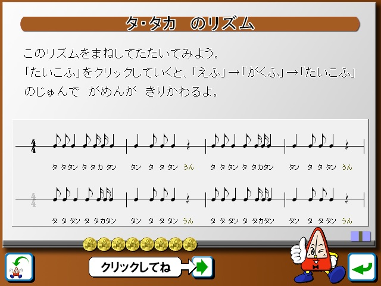

うるがいの話 ある日
最新: リズム感を鍛えたい【うるがいの話 ある日】とは 一日だけのプログです
『うるがいの話』の最新一日だけのプログで、通信料が少なく経済的だ。カニの画像をクリックすると全ての日付が載る『うるがいの話』サイトを表示します
|
|
【うるがいの話】 うるがい(ｳﾙｶﾞｲ urugai)とは、『もずくがに』の名前でとても大きくなります。 |
|---|---|
|
|
【カミマヤーの話】 猫のことを方言でマヤーといいます。カミマヤー（kamimayaa）とは、神の猫のことです。 |
|
【たながぁの音楽】 たながぁ（ﾀﾅｶﾞｰ tanagaa）とは手長えびのことで、何種類かあり大きいのは車 エビぐらいになります。 |

|
【ぶながぁの話】 ぶながぁ(ﾌﾞﾅｶﾞｰ bunagaa)とは、赤い髪の毛、赤い身体、そして身長は１ｍ２０ｃｍ ぐらい、川の蟹を食べているの目撃された。場所は沖縄県国頭郡大宜味村のと ある村僕の隣近所に住んでいる爺さんから、聞いた話です。 |
|
|
【ギーマの話】 ギーマ(giima)とは、山原の里山に咲くスズランに似た、 花を付けます。実は食べられます、 気が付くと口の周りが紫になっています。 |
2024年11月27日 (水）リズム感を鍛えたい
21:22

ということで『リズムを鍛える パソコン 無料アプリ』と、検索したら
リズムの城が探せた。
河合楽器製作所は２０２１年３月１１日、パソコンで簡単にリズムの練
習ができる小学生向け音楽教育ソフト「リズムの城」を無償公開した。
パソコンのキーボードの矢印キーをタイミングよく押して、リズムがと
れるように練習できる。
コロナ禍における学習支援として昨年（２０２０年）１１月末から無償
公開されている音楽教育ソフトの「うたの城」や「おとあそびの城」、
「リコーダーの城」、「クイズの城」、「けんばんハーモニカの城」、
「しきの城」に続く第７弾。
先週の水曜日から、インストールし訓練する。なんて、下手くそなので
しょう。悲しくてやりきれない、小学生向けなのに。

ま、時間はあるので頑張るべ、小学生のときの、音楽の先生の声が聞こ
えてくる。
本日のバタフライピーの花、４２収穫。
２１時０９分 ビットコインの総資産 ￥４１、０７７（↓１、１５９）
売却額 ￥３９、７２１